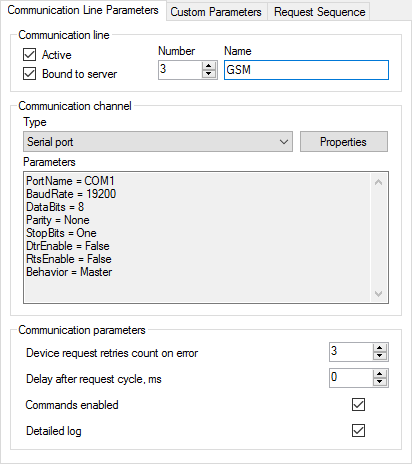
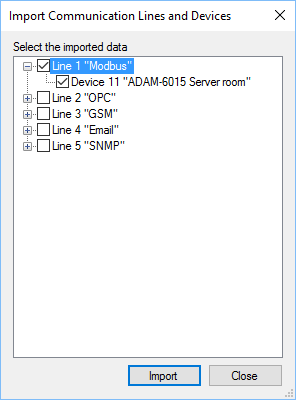

Figure 2. Request sequence
Interaction with real or virtual devices is performed by the Communicator application which acting as a master or a slave, requests data and sends commands to devices. All the devices are bound to communication lines. Communication lines are independent on each other and are used simultaneously.
Figure 1 shows an example of communication line parameters. A communication channel determines physical interface or network protocol which is used for data exchange with devices. The following communication channels are supported: Serial port, TCP client, TCP server and UDP. In some cases, if the interaction with devices is implemented in a device library, communication channel should be undefined (e.g., OPC implementation).
If sending commands to devices is required, it is necessary to tick Commands enabled. By default, this checkbox is disabled due to safety reasons.
Communication order and request parameters are set on the Request Sequence page (see Figure 2).

Figure 1. Communication line parameters
Figure 2. Request sequence
If the Active checkbox on the Communication Line Parameters page is unset, the appropriate communication line is disabled, and no requests are performed. If the Active checkbox in the Selected device group box is unset, communication with the appropriate device is disabled.
The Bound to server checkbox on the Communication Line Parameters page allows to switch on or switch off sending the communication line data to Server. The Bound checkbox in the Selected device group box has the similar purpose, but only for the device. If the Use SCADA-Server checkbox on the Common Parameters page is unset, any interaction between Communicator and Server is switched off. These options are useful for testing new devices connecting to the system.
If the Time and Period request parameters of a device are equal to zero, the device is requested cyclically. If Time greater than zero and Period is zero, the device is requested once a day in the specified time. If Period greater than zero, the device is requested periodically starting at the specified time. The Timeout field defines how long to wait an answer from the device after a request. The Delay field defines a delay after each request to the device. Command line may contain additional parameters described in documentation of a device library.
To reset request parameters of the selected device to the default values, click  button. To open the device properties form, if it is supported by a device library of the selected device, click
button. To open the device properties form, if it is supported by a device library of the selected device, click  button or use a popup menu of the tree. To set global properties for a device type choose the Device Libraries page, select the device library and click the Properties button if the button is enabled.
button or use a popup menu of the tree. To set global properties for a device type choose the Device Libraries page, select the device library and click the Properties button if the button is enabled.
The import feature significantly speeds up configuring Communicator (see Figure 3). This feature is allowable if the Use SCADA-Server checkbox on the Common Parameters page is set and the Server service is running. To start import, click  button. Such button is located on the Request Sequence page and in a popup menu of the tree. The import feature adds communication lines and devices to the Communicator configuration using the information of the configuration database.
button. Such button is located on the Request Sequence page and in a popup menu of the tree. The import feature adds communication lines and devices to the Communicator configuration using the information of the configuration database.
Click  to update the Communicator settings according to the configuration database. Names of the communication lines and properties of the devices are affected. Be careful not to lose settings made manually.
to update the Communicator settings according to the configuration database. Names of the communication lines and properties of the devices are affected. Be careful not to lose settings made manually.

Figure 3. Import devices